NIHAO XXV: التقارب في التحول من النتوء المركزي إلى اللب في هالات المادة المظلمة الباردة عند عتبات مرتفعة لتكوين النجوم
الملخص
نستخدم محاكيات كونية هيدروديناميكية لتكوّن المجرات من مشروع NIHAO لدراسة استجابة هالات المادة المظلمة الباردة (CDM) للعمليات الباريونية. وقد بيّن عمل سابق أن استجابة الهالة تعتمد أساسا على النسبة بين الكتلة النجمية للمجرة والكتلة الفيريالية الكلية، وعلى عتبة الكثافة التي يصبح الغاز فوقها مؤهلا لتكوين النجوم، . عند قيم منخفضة من تتفق جميع المحاكيات الواردة في الأدبيات على أن هالات المجرات القزمة ذات نتوء مركزي، أما عند قيم مرتفعة من فلا يوجد توافق في الآراء. ونُرجع انكماش الهالة في المجرات القزمة ذات ، كما ورد في بعض المحاكيات السابقة، إلى عدم كفاية الاستبانة المكانية. وإذا كانت عتبة تكوين النجوم المعتمدة ملائمة لاستبانة المحاكاة، فإننا نبيّن أن استجابة الهالة مستقرة على نحو ملحوظ من أجل ، حتى أعلى عتبة لتكوين النجوم نختبرها، . ويمكن معايرة هذا الوسيط الحر باستخدام التكتل المرصود للنجوم الفتية. فالمحاكيات ذات العتبات المنخفضة تتنبأ بتكتل أضعف من اللازم، في حين أن المحاكيات ذات عتبات تكوين النجوم المرتفعة متوافقة مع التكتل المرصود. وأخيرا، نختبر تنبؤات CDM في ضوء السرعات الدائرية للمجرات القزمة القريبة. فالعتبات المنخفضة تتنبأ بسرعات أعلى من اللازم، بينما تقدم المحاكيات ذات توافقا جيدا مع الأرصاد. ومن ثم نستنتج أن نموذج CDM يقدم وصفا جيدا لبنية المجرات على مقاييس الكيلوفرسخ، شريطة أن تؤخذ تأثيرات الباريونات في الحسبان على نحو صحيح.
keywords:
علم الكونيات: النظرية – المادة المظلمة – المجرات: التكوّن – المجرات: الحركيات والديناميكيات – المجرات: البنية – الطرق: عددية1 مقدمة
توفر بنية هالات المادة المظلمة على مقاييس الكيلوفرسخ اختبارا فيزيائيا فلكيا حساسا للنموذج القياسي للمادة المظلمة الباردة (CDM)، وبصورة أعم لطبيعة المادة المظلمة (مثلا، Bullock & Boylan-Kolchin, 2017). ومن خلال استخدام محاكيات عديمة التبدد، صارت بنية هالات CDM في غياب الباريونات محددة جيدا (مثلا، Stadel et al., 2009; Dutton & Macciò, 2014). ويُعتقد أن تبدد الغاز نحو مركز الهالات لا يؤدي إلا إلى انكماش هالة المادة المظلمة (Blumenthal et al., 1986; Gnedin et al., 2004). غير أن عمليات باريونية أخرى يمكنها أن تسبب تمدد هالة المادة المظلمة: كالاحتكاك الديناميكي الناتج من كتل باريونية ساقطة (El-Zant et al., 2001)، والرنين مع القضبان المجرية (Weinberg & Katz, 2002)، والحلقات المتعددة من تدفقات الغاز الخارجة (Read & Gilmore, 2005; Pontzen & Governato, 2012; Dutton et al., 2016b).
وباستخدام 10 محاكاة كونية لتكوّن المجرات من مشروع MAGICC (Stinson et al., 2013)، وجد Di Cintio et al. (2014a) أن بنية هالات CDM، ومن ثم المفاضلة بين تدفقات الغاز الداخلة والخارجة، تعتمد على النسبة بين الكتلة النجمية للمجرة وكتلة الهالة (وهي متناسبة مع الكفاءة المتكاملة لتكوين النجوم). عند قيم منخفضة من يبقى منحنى المادة المظلمة دون تغير، بسبب ضآلة تبدد الغاز وضآلة تدفقاته الخارجة. ومع ازدياد الكفاءة يصبح تمدد الهالة أقوى، بينما يظل التأثير الانكماشي للتدفقات الداخلة صغيرا. ويبلغ التمدد الأقصى عند . وعند قيم أعلى من يتناقص التمدد بسبب تزايد أهمية تدفقات الغاز الداخلة، إلى أن تنكمش الهالة فوق .
وقد أكد Tollet et al. (2016) هذه النتيجة باستخدام 60 محاكاة من مشروع NIHAO (Wang et al., 2015)، كما أكدها Chan et al. (2015); Bullock & Boylan-Kolchin (2017); Lazar, et al. (2020) باستخدام مجرات محاكاة من مشروعي FIRE (Hopkins et al., 2014) وFIRE-2 (Hopkins et al., 2018). وانظر أيضا Macciò, et al. (2020) لتوسيع النتيجة إلى المجرات الضخمة ذات تغذية راجعة من AGN. لكن Bose et al. (2019) يجد في الأساس عدم حدوث تغير في هالة المادة المظلمة عبر نطاق واسع من باستخدام محاكيات مشروعي AURIGA (Grand et al., 2017) وAPOSTLE (Sawala et al., 2016). ويكمن حل هذا التناقض الظاهري في أن استجابة الهالة تعتمد بقوة على عتبة كثافة تكوين النجوم المعتمدة في المحاكاة (Governato et al., 2010; Dutton et al., 2019c; Benítez-Llambay et al., 2019). فالعتبات العالية يمكن أن تؤدي إلى تمدد الهالة (لقيم ملائمة من )، في حين أن العتبات المنخفضة (مثل APOSTLE وAURIGA) لا تؤدي أبدا إلى تمدد ملحوظ في الهالة. ومع أن رموز المحاكاة المختلفة تتفق على استجابة الهالة عند قيم منخفضة من ، فلا يوجد بعد توافق في الآراء عند قيم مرتفعة من ؛ إذ وجد Benítez-Llambay et al. (2019) انكماشا للهالة المظلمة في المجرات القزمة، بينما وجد كل من FIRE وFIRE-2 وGovernato et al. (2010, 2012) وRead et al. (2016) تمدد الهالة.
ولكي تقدم المحاكيات الهيدروديناميكية لتكوّن المجرات تنبؤا متينا لبنية هالات CDM، نحتاج إذن إلى إيجاد طرق للتمييز بين المحاكيات ذات عتبات تكوين النجوم المختلفة. فقد بيّن Dutton et al. (2019c) أن المحاكيات ذات العتبات المختلفة لتكوين النجوم تولد فروقا في تقلب معدلات تكوين النجوم، مع زيادة في التقلب بمعامل عند مقارنة بـ . وبيّن Buck et al. (2019b) أن المحاكيات ذات عتبات تكوين النجوم المختلفة تؤدي إلى فروق في التوزيع المكاني للنجوم الفتية، ولا سيما في الارتباط النقطي الثنائي. وبالمقارنة مع أرصاد الارتباط النقطي الثنائي لعناقيد النجوم الفتية من LEGUS (Grasha et al., 2017)، وجد Buck et al. (2019b) أن متوافق مع الأرصاد، وأن و غير متوافقين، إذ يكون التكتل أضعف من اللازم.
في هذه الورقة نوسع دراستي Dutton et al. (2019c) و Buck et al. (2019b) إلى عتبات لتكوين النجوم أعلى بمرتبة مقدار، بهدف حسم النتائج المتعارضة عند . ونضم أيضا مجموعة جديدة من المحاكيات عند أعدنا معايرتها باستخدام كفاءة تكوين النجوم بدلا من كفاءة التغذية الراجعة.
تنظم هذه الورقة على النحو الآتي: تُعرض مجموعة المحاكيات في القسم 2. وترد النتائج المتعلقة بتقارب البنية الداخلية لهالات CDM في القسم 3. وفي القسم 4 نقيّد عتبة تكوين النجوم باستخدام تكتل النجوم الفتية. وفي القسم 5 نختبر تنبؤات CDM بحركيات المجرات، وأخيرا يرد ملخص في القسم 6.
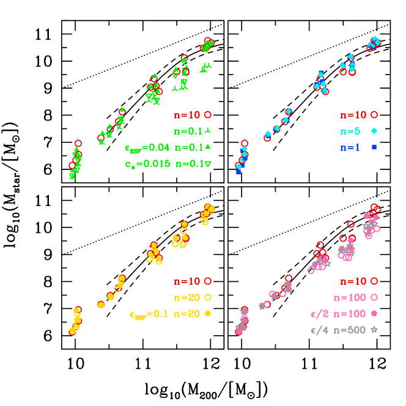
2 المحاكيات
كما في Dutton et al. (2019c)، نستخدم مجموعة من 20 هالة ذات كتل فيريالية بين و مأخوذة من مشروع NIHAO (Wang et al., 2015). وNIHAO عينة من محاكاة كونية هيدروديناميكية أُجريت باستخدام رمز SPH gasoline2 (Wadsley et al., 2017). وتكمن فرادة NIHAO في الجمع بين الاستبانة المكانية العالية عبر نطاق واسع من كتل الهالات ( إلى ) لعينة إحصائية من الهالات.
تُختار كتل جسيمات المادة المظلمة وتليينات القوة لكي تُحل منحنى الكتلة عند في المئة من نصف القطر الفيريالي، مما ينتج عنه جسيم من المادة المظلمة داخل نصف القطر الفيريالي لجميع الهالات الرئيسة عند . أما الكتل وتليينات القوة المناظرة لجسيمات الغاز فهي أقل بمعامل و. ولكل محاكاة هيدروديناميكية محاكاة مقابلة بالاستبانة نفسها، لكنها تحتوي فقط على جسيمات المادة المظلمة (مادة مظلمة فقط، DMO). وقد بدأت محاكيات DMO هذه من الشروط الابتدائية نفسها، مع استبدال الجسيمات الباريونية بجسيمات مادة مظلمة.
كما نوقش بالتفصيل في أوراق سابقة، وكما نوجز أدناه، فإن مجرات NIHAO متوافقة مع نطاق واسع من خصائص المجرات. فهي تكون المقدار الصحيح من النجوم (مقارنة بمطابقة وفرة الهالات) في الحاضر وفي أزمنة أبكر (Wang et al., 2015). وتتفق كتل الغاز البارد وأحجام نصف الضوء له مع الأرصاد (Stinson et al., 2015; Macciò et al., 2016). كما تتبع عدة علاقات قياسية حركية أساسية: علاقات تولي-فيشر للغاز والنجوم والباريونات (Dutton et al., 2017)، وعلاقة التسارع الشعاعي (Dutton et al., 2019b). وتطابق المورفولوجيا المتكتلة المرصودة في المجرات عند انزياحات حمراء عالية (Buck et al., 2017). وهي توفق بين التعارض القائم بين دالة سرعات عرض الخط Hi الضحلة المرصودة في الكون القريب ودالة سرعات هالات LCDM الحادة (Macciò et al., 2016; Dutton et al., 2019a). كما تنتج دوال كتل للأقمار تشبه دالة Milky Way (Buck, et al., 2019a)، وتحاكي القضيب النجمي المركزي في Milky Way (Buck, et al., 2018, 2019c). ونظرا إلى كل هذا النجاح، فإنها تقدم قالبا جيدا للتنبؤ ببنية هالات المادة المظلمة الباردة.
نحيل القارئ إلى Wang et al. (2015) للاطلاع على وصف محاكيات NIHAO، وإلى Dutton et al. (2019c) لمزيد من خصائص المجرات الـ 20 المعاد محاكاتها. ونصف هنا بإيجاز الوسائط التي نغيرها في هذه الورقة: عتبة تكوين النجوم ، وكفاءة التغذية الراجعة النجمية المبكرة، ، وكفاءة تكوين النجوم، .
في محاكياتنا يُنفذ تكوين النجوم كما وصفه Stinson et al. (2006, 2013). وتتكون النجوم من غاز يكون باردا (K) وكثيفا ([cm-3]) في آن معا. ويتحول الغاز الذي يتجاوز كلتا العتبتين إلى نجوم وفقا لـ
| (1) |
هنا تمثل كتلة النجوم المتكونة، وتمثل Myr الفاصل الزمني بين أحداث تكوين النجوم (عمر الكون)، وتمثل زمن جسيم الغاز الديناميكي. وتُضبط الكفاءة المرجعية لتكوين النجوم على .
في محاكيات NIHAO المرجعية نعتمد عتبة لتكوين النجوم مقدارها . وقد اختيرت لأنها تمثل تقريبا الكثافة القصوى التي يمكننا حلها:
| (2) |
حيث إن هي كتلة جسيم الغاز و هو تليين قوة الجاذبية للغاز. وهنا يمثل 50 عدد جسيمات SPH في نواة التنعيم. ولجميع محاكياتنا (ذات مستويات الاستبانة المختلفة)، تؤدي هذه الصيغة إلى قيمة نفسها.
في هذه الورقة نعرض نتائج جديدة لمحاكيات ذات و ، وكذلك لقيم أعلى بكثير هي و. وكما سنبين أدناه، نحتاج، من أجل تكوين مجرات ذات توزيعات كتلة باريونية واقعية عند ، إلى تليينات قوة أصغر. فالتليين الأصغر يسمح للغاز بأن يتكتل على مقاييس أصغر، ومن ثم أن يبلغ كثافات أعلى (المعادلة 2).
الوسيط الآخر ذو الصلة بهذه الدراسة هو كفاءة التغذية الراجعة. وتستخدم محاكيات NIHAO تغذية راجعة حرارية في حقبتين كما وصف Stinson et al. (2013). تمثل الحقبة الأولى إدخال الطاقة من الرياح النجمية والتأين الضوئي الصادرين عن النجوم الفتية الساطعة قبل انفجار المستعرات العظمى. لذلك نسمي هذه التغذية الراجعة النجمية المبكرة (ESF). وتتكون ESF من كسر من الفيض النجمي الكلي مقذوفا من النجوم إلى الغاز المحيط ( إرج من الطاقة الحرارية لكل من كامل السكان النجميين). ويبقى التبريد الإشعاعي مفعلا في حالة ESF.
تمثل الحقبة الثانية إدخال الطاقة من المستعرات العظمى، وتبدأ بعد 4 Myr من تكوّن النجم. وتطرح النجوم ذات الكتلة كلا من الطاقة ( إرج لكل SN) والمعادن في غاز الوسط بين النجمي المحيط بالمنطقة التي تكونت فيها. وتنفذ التغذية الراجعة للمستعرات العظمى باستخدام صياغة موجة الانفجار الموصوفة في Stinson et al. (2006). ولتصحيح الفواقد الإشعاعية العددية، يطبق هذا النموذج صياغة تبريد مؤجل للجسيمات داخل منطقة الانفجار لمدة Myr.
الوسيطان الافتراضيان لنموذج التغذية الراجعة هما و. وقد عويرا على تطور علاقة الكتلة النجمية مقابل كتلة الهالة من مطابقة وفرة الهالات (Behroozi et al., 2013; Moster et al., 2013) لهالة بكتلة Milky Way مقدارها . وفي هذه الورقة نترك ونغير .
2.1 الهالات والمجرات
تُحدد الهالات باستخدام كاشف الهالات الهجين MPI+OpenMP AHF11 1 http://popia.ft.uam.es/AMIGA (Gill et al., 2004; Knollmann & Knebe, 2009). وتُعرّف الكتلة الفيريالية لكل هالة بأنها كتلة جميع الجسيمات داخل كرة يبلغ متوسط كثافتها 200 ضعف كثافة المادة الحرجة الكونية، . وفي المحاكيات الهيدروديناميكية نرمز إلى كتلة الهالات وحجمها وسرعتها الدائرية بـ: ، ، . أما في محاكيات DMO، فيشار إلى الخصائص المناظرة برمز علوي، . ونعرّف الكتلة النجمية، ، للمجرة بأنها كتلة النجوم المحصورة داخل كرات نصف قطرها ، أي ما يقابل إلى kpc. وننظر إلى الهالة الرئيسة في كل محاكاة تكبير.
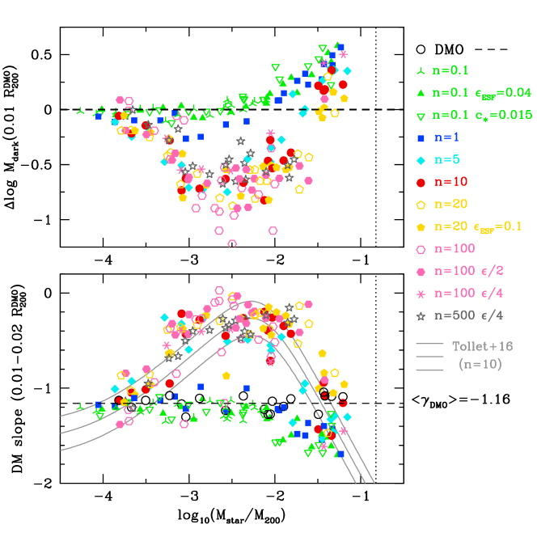
2.2 إعادة معايرة التغذية الراجعة
يبين الشكل 1 النسبة بين الكتلة النجمية والكتلة الفيريالية عند الانزياح الأحمر للهالات الرئيسة الـ 20. وتمثل الخطوط المتصلة (والمتقطعة) المتوسط (والتشتت) من مطابقة وفرة الهالات لدى Moster et al. (2018)، بعد أن صححناها لتعريفنا لكتلة الهالة. ويعرض كل لوح نتائج (NIHAO المرجعية، دوائر حمراء مفتوحة) مع قيمة أو قيمتين أخريين من . عند و تكون العلاقة متشابهة جدا (اللوح العلوي الأيمن). غير أن وسائط المحاكاة المرجعية تنتج نجوما أقل من اللازم عند القيم الأعلى والأدنى من ، ولا سيما في المجرات الأعلى كتلة ().
عند تؤدي الوسائط المرجعية () إلى إنتاج كتل نجمية أقل من اللازم بمرتبة مقدار في هالات . وقد أعدنا معايرة محاكيات بطريقتين: بتخفيض كفاءة التغذية الراجعة النجمية المبكرة إلى (مثلثات ممتلئة)، أو بتخفيض كفاءة تكوين النجوم من إلى (مثلثات مقلوبة مفتوحة). وقد يبدو التأثير الأخير غير بديهي، إذ إن قيمة أصغر من يتوقع، في غياب التغذية الراجعة، أن تؤدي إلى كتلة نجمية أصغر. غير أن الاتجاه المعاكس يحدث عند تضمين التغذية الراجعة. فالتغذية الراجعة تسخن الغاز وتزيله من مناطق تكوين النجوم، ومن ثم تؤخر بشكل طبيعي مقدار النجوم المتكونة وتخفضه. وبما أن الغاز الأعلى كثافة يشع الطاقة بعيدا بسرعة أكبر، فإن التغذية الراجعة تكون أقل كفاءة عندما يكون الغاز المحيط أكثف. وتؤدي قيمة أصغر من في البداية إلى تكوين نجوم أقل، لكنها تؤدي أيضا إلى حقن طاقة تغذية راجعة أقل في ISM، مما ينتج عنه غاز أكثف. ويقلل الغاز الأكثف كفاءة أحداث التغذية الراجعة اللاحقة، ومن ثم يترك غازا أكثر متاحا لتكوين النجوم، وينتهي الأمر إلى كتل نجمية أعلى.
عند يكون الانخفاض في الكتلة النجمية صغيرا نسبيا. نعيد المعايرة بتخفيض كفاءة التغذية الراجعة النجمية المبكرة من (خماسيات صفراء مفتوحة) إلى (خماسيات صفراء ممتلئة). وتعاني محاكيات نقصا مماثلا في إنتاج النجوم كما في محاكيات . وقد جربنا تغيير كفاءة التغذية الراجعة بنجاح محدود. فمشكلة هذه المحاكيات أعمق من اختيار وسائط النموذج: إنها تفتقر ببساطة إلى الاستبانة المكانية اللازمة لتمكين كميات كافية من الغاز من بلوغ عتبة تكوين النجوم محليا. وعند نجري محاكيات يكون فيها لجميع الجسيمات نصف تليين القوة (سداسيات أرجوانية ممتلئة). وعند نستخدم ربع التليين القياسي (نجوم رمادية). والتأثير الرئيس لتقليل تليين القوة هو أنه يسمح لكثافات الغاز الملسّنة بأن تكون أعلى (لأننا نجعل طول التنعيم في SPH متناسبا مع تليين قوة الجاذبية). ومن ثم فإن تليين قوة أخفض بمعامل 2 يسمح بغاز أكثف بمعامل 8، وتليين قوة أخفض بمعامل 4 يسمح بغاز أكثف بمعامل 64. وتكوّن هذه الهالات نجوما أكثر بكثير من محاكيات التليين القياسي، لكنها لا تزال تنتج نجوما أقل من اللازم (في الهالات ذات ) مقارنة بمحاكيات وبمطابقة وفرة الهالات. ولذلك فإن هذه المحاكيات ستستفيد من إعادة معايرة إضافية لكفاءة التغذية الراجعة و/أو كفاءة تكوين النجوم. غير أننا نلاحظ أن الكتل النجمية في هالات المجرات القزمة غير حساسة على نحو لافت لعتبة تكوين النجوم ولاختيار تليين القوة.
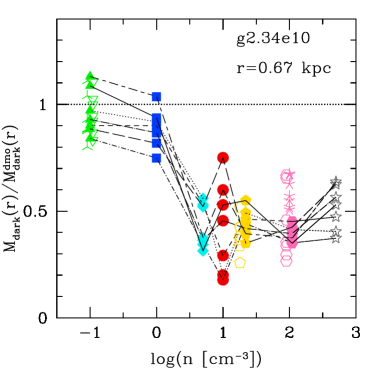
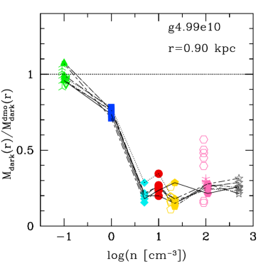
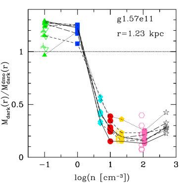
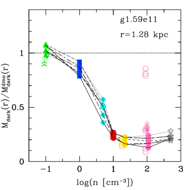
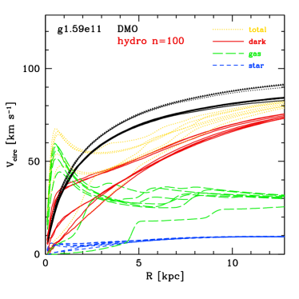
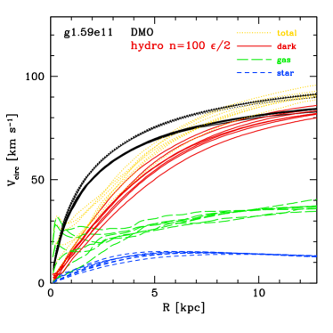
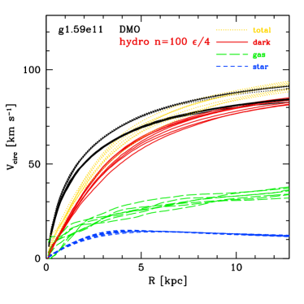
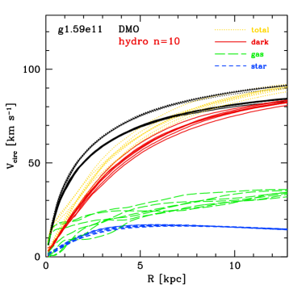
3 التقارب في استجابة الهالة عند عتبة مرتفعة لتكوين النجوم
تظهر النتيجة الرئيسة لهذه الورقة في الشكل 2. فهو يعرض التغير في منحنى كتلة المادة المظلمة عند 1 في المئة من نصف القطر الفيريالي (وهو مطابق للتغير في كثافة المادة المظلمة المحصورة)، بينما يعرض اللوح السفلي ميل منحنى كثافة المادة المظلمة المحصورة بين 1 و2 في المئة من نصف القطر الفيريالي. لاحظ أننا نستخدم هنا كثافة المادة المظلمة المحصورة بدلا من كثافة المادة المظلمة المحلية كما استُخدمت في أعمالنا السابقة (مثلا، Tollet et al., 2016)، لكن النتائج متماثلة نوعيا (قارن الخطوط الرمادية بالدوائر الحمراء).
في الألواح العليا يقابل الخط المتقطع محاكاة DMO (بحسب التعريف)، بينما في الألواح السفلى تبين الدوائر المفتوحة محاكيات DMO (التي تتجمع قريبا من ميل NFW البالغ ). وتعرض النتائج مقابل نسبة الكتلة النجمية إلى كتلة الهالة، لأن هذا الوسيط ثبت أنه أكثر ارتباطا باستجابة الهالة (Di Cintio et al., 2014a; Dutton et al., 2016b; Bullock & Boylan-Kolchin, 2017) من الكتلة النجمية وحدها أو كتلة الهالة وحدها.
بالنسبة إلى محاكيات أدنى عتبة لتكوين النجوم (مثلثات خضراء)، تبقى الهالات في الأساس دون تغير عند ، في حين تنكمش عند قيم أعلى من بسبب ازدياد تبدد الغاز. ونعرض ثلاث مجموعات من المحاكيات عند : كفاءة التغذية الراجعة النجمية المبكرة المرجعية (مثلثات خضراء ذات نتوءات)، و (مثلثات خضراء ممتلئة)، و (مثلثات خضراء مفتوحة). وتظهر المجموعات الثلاث من المحاكيات الاتجاه نفسه لاستجابة الهالة مع . وتتشابه هذه النتائج عند كثيرا مع نتائج محاكيات APOSTLE و AURIGA التي عرضها Bose et al. (2019). وهذا الاتفاق مشجع بالنظر إلى الفروق الكثيرة بين الرموز. فهو يشير إلى أن طريقة نمذجة التغذية الراجعة من المستعرات العظمى، وكذلك المخطط الهيدروديناميكي، لهما أهمية ثانوية مقارنة بعتبة تكوين النجوم. علاوة على ذلك، لا نعرف أي محاكاة كونية لتكوّن المجرات تناقض هذه النتيجة. لذلك نستنتج أن غياب تمدد الهالة في المحاكيات المشغلة بعتبات منخفضة لتكوين النجوم هو نتيجة نظرية متينة. وكما نوقش سابقا، وكذلك أدناه، إذا لم تتمدد هالات CDM منخفضة الكتلة، فإن ما يسمى بمشكلة أكبر من أن تفشل للمجرات الحقلية يمثل تحديا خطيرا لنموذج CDM (Garrison-Kimmel et al., 2014; Dutton et al., 2016a, 2019c).
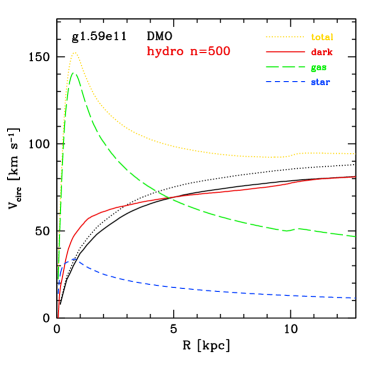
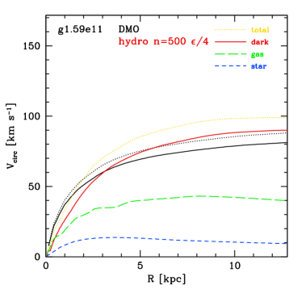
مع زيادة عتبة تكوين النجوم إلى (مربعات زرقاء)، تكون الاتجاهات مشابهة لما عند ، لكن مع ميول DM أقل حدة وتمدد طفيف للهالة. وعند (معينات سماوية) يحدث تمدد قوي للهالة عندما تكون ، بينما لا تزال الهالات تنكمش عند . وبالنسبة إلى العتبات العالية (دوائر حمراء ممتلئة)، و (خماسيات صفراء)، و (سداسيات أرجوانية)، و (نجوم رمادية)، تبدو استجابة الهالة وقد تقاربت مع تمدد قوي نحو ألباب من المادة المظلمة عند .
إن مفهوم التقارب في استجابة الهالة معقد، لأن تمدد الهالة في محاكياتنا يحدث أساسا بفعل تدفقات الغاز الخارجة المدفوعة بالتغذية الراجعة. وتحدث هذه التدفقات أثناء اندفاعات في تكوين النجوم. ولا يكون توقيت هذه الاندفاعات متطابقا في محاكيات مختلفة أُجريت بالشروط الابتدائية نفسها، بسبب الطبيعة العشوائية لتكوين النجوم في محاكياتنا. ولذلك، عندما نتحدث عن التقارب نركز على كميات متوسطة على مدى عدة خطوات زمنية و/أو محاكيات ذات كتلة هالة معينة اليوم.
يبين الشكل 3 التقارب في استجابة الهالة عند عتبات تكوين النجوم العالية لأربع هالات منفردة. ويمثل المحور الرأسي النسبة بين كتل المادة المظلمة المحصورة في المحاكيات الهيدروديناميكية ومحاكيات DMO عند 1 في المئة من نصف القطر الفيريالي (أي الوسيط نفسه كما في اللوح العلوي من الشكل 2). ولكل محاكاة نعرض نتائج سبع لقطات متساوية التباعد زمنيا بين الانزياحين الأحمرين و . ويظهر ذلك أن بنية الهالة لهالة معينة تتباين بوضوح مع الزمن. وهذا التباين ناتج من مزيج من العمليات العشوائية والتطور المنهجي. ومع ذلك، إذا نظرنا إلى الاتجاهات، نرى فرقا قويا في استجابة الهالة المتوسطة بين (مربعات زرقاء) و (معينات سماوية). وعند تظهر استجابة الهالة تقاربا جيدا لهالة معينة. ونعني بالتقارب أن كتلة المادة المظلمة المتوسطة مستقلة عن . والاستثناء هو أنه عند نرى تباينا أكبر في استجابة الهالة لمحاكيات التليين المرجعي (سداسيات مفتوحة) مقارنة بمحاكيات نصف التليين (سداسيات ممتلئة). وبالنسبة إلى g1.59e11 نرى حتى بضع لقطات ذات نسب كتلة قريبة من الواحد. ونرد منشأ هذه السمة في محاكيات إلى عدم كفاية الاستبانة المكانية. فعندما تكون عتبة تكوين النجوم أقل من (في محاكياتنا المرجعية الاستبانة)، يمكن للغاز أن يتجزأ محليا ويتحول إلى نجوم، وتدفع التغذية الراجعة الناتجة الغاز إلى الخارج، مانعة تراكمه في مركز المجرة. وعندما تكون العتبة أعلى من ، يفقد الغاز عزمه الزاوي وينهار نحو مركز المجرة بدلا من أن يكون نجوما، إلى أن يصبح بأكمله فوق عتبة تكوين النجوم. ثم يحدث اندفاع نجمي كبير وتدفق غازي خارج، وتتكرر العملية بعد ذلك.
يعرض الشكل 4 مثالا توضيحيا لذلك للهالة g1.59e11. يبين كل لوح منحنيات السرعة الدائرية لسبع لقطات متساوية التباعد زمنيا بين الانزياحين الأحمرين و. وفي محاكياتنا القياسية (أسفل اليمين)، تكون منحنيات النجوم (أزرق) والغاز (أخضر) والمادة المظلمة (أحمر) مستقرة نسبيا، وتكون المادة المظلمة قد تمددت بالنسبة إلى DMO؛ وتبين الخطوط السوداء المكونات الكلية (منقطة) و“المظلمة” (متصلة). أما عند (أعلى اليسار)، فيوجد تباين واسع في منحنى الغاز. ففي بعض اللقطات يكون الغاز مركزا جدا، بينما يكون الغاز في لقطات أخرى قد قُذف بعيدا من مركز المجرة. وكما هو متوقع، يتبع تباين المادة المظلمة تباين الغاز (أي عندما يكون الغاز أكثر تركيزا تكون المادة المظلمة أكثر تركيزا). وفي بعض اللقطات يتبع منحنى المادة المظلمة حتى محاكاة DMO عند أنصاف أقطار صغيرة ( kpc). وبما أن لاختيارنا المرجعي لـ و، فإننا لا نتوقع أن تكون هذه المحاكاة واقعية فيزيائيا.
يمكن إصلاح هذه المشكلة في محاكيات ببساطة عن طريق تقليل تليين القوة للجسيمات. فعندما نقلل تليينات القوة للجسيمات بمعامل 2 (، أعلى اليمين) وبمعامل 4 (، أسفل اليسار)، تكون المنحنيات الناتجة (للنجوم والغاز والمادة المظلمة) شديدة الشبه بتلك في محاكيات . ونلاحظ أن هذه التليينات الأصغر للقوة تقع داخل الحدود التي وضعها Ludlow, Schaye & Bower (2019)؛ انظر شكلهم 1. ولاحظ أيضا أنه لم تجر إعادة معايرة لهذه المحاكيات.
يعرض الشكل 5 الهالة نفسها، لكن في زمن أبكر () والآن مع . أما التشغيل ذو التليين القياسي (أعلى اليسار)، فقد أصبح فيه انتفاخ غازي مفرط التبريد إلى حد شديد، يسيطر على الجهد المركزي وأدى إلى انكماش الهالة المظلمة (الخط الأحمر المتصل فوق الخط الأسود المتصل تحت 5 kpc). كما يجعل الانتفاخ الغازي الكثيف المحاكاة أبطأ بكثير في التشغيل، ولذلك أوقفناها عند انزياح أحمر عال. أما التشغيل بربع التليين (يمين)، فله منحنيات نجوم وغاز ومادة مظلمة مشابهة لمحاكيات ذات ربع التليين ومحاكيات . ولا تزال هذه المحاكيات كلها مهيمن عليها بالمادة المظلمة عند أنصاف أقطار صغيرة، وقد تمددت الهالة الداخلية للمادة المظلمة مقارنة بحالة DMO.
بيّن Benítez-Llambay et al. (2019) أن محتوى المادة المظلمة الداخلي في الهالات منخفضة الكتلة (وحجم ألبابها) حساس جدا لعتبة تكوين النجوم المفترضة في نموذج EAGLE، مما يعيق التنبؤات النموذجية المتينة وتفسير البيانات الرصدية. وتملك محاكيات المجرات القزمة لدى Benítez-Llambay et al. (2019) القيمتين و pc، مما ينتج عنه (أي ما يكاد يطابق محاكياتنا المرجعية). وتكون استجابة الهالة لديهم مستقرة من إلى . وعند يبدأون في رؤية آثار فرط التبريد. وبحلول و ، يسيطر الغاز على الجهد المركزي وتنكمش هالة المادة المظلمة. لذلك تتفق نتائجهم تماما مع ما نعرضه هنا لتشغيلات تليين القوة المرجعي لدينا.
يقترح Benítez-Llambay et al. (2019) أن عدم كفاءة التغذية الراجعة من المستعرات العظمى عند كثافات غازية أعلى في رمز EAGLE (Crain et al., 2015) هو المسؤول عن ازدياد الكثافات الغازية المركزية عند اعتماد عتبة أعلى لتكوين النجوم. ويقترحون أن التنفيذ العددي للتغذية الراجعة سيكون مهما عند كثافات غازية عالية، لأن هذا الأثر (فرط التبريد) لا يحدث في مجرات FIRE-2 (Hopkins et al., 2018) التي تعتمد عتبة عالية جدا مقدارها .
تشير نتائجنا إلى تفسير أبسط بكثير، وهو أن تليين القوة الذي استخدمه Benítez-Llambay et al. (2019) غير ملائم لعتبات تكوين النجوم الأكبر بكثير من . وفي الواقع، تستطيع محاكيات FIRE-2 (Fitts, et al., 2017) تكوين مجرات ذات منحنيات غاز تبدو طبيعية مع ببساطة لأنها تعتمد تليينات قوة صغيرة جدا (أصغر بمقدار مرة من NIHAO المرجعية عند كتلة جسيم معينة)22 2 يستخدم Fitts, et al. (2017) pc من أجل . قارن هذا بـ pc من أجل في NIHAO، وهو ما يتدرج إلى pc من أجل ..
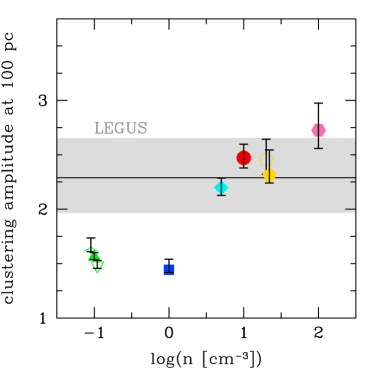
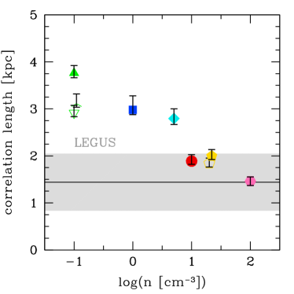
خلاصة القول إن استجابة هالات المادة المظلمة لتكوين المجرات حساسة لعتبة تكوين النجوم. غير أن الاعتماد على عتبة تكوين النجوم بسيط إلى حد بعيد ومتقارب: فعند العتبات المنخفضة تتبع هالات المجرات القزمة في الأساس تنبؤات DMO، بينما تتمدد الهالات عند من أجل .
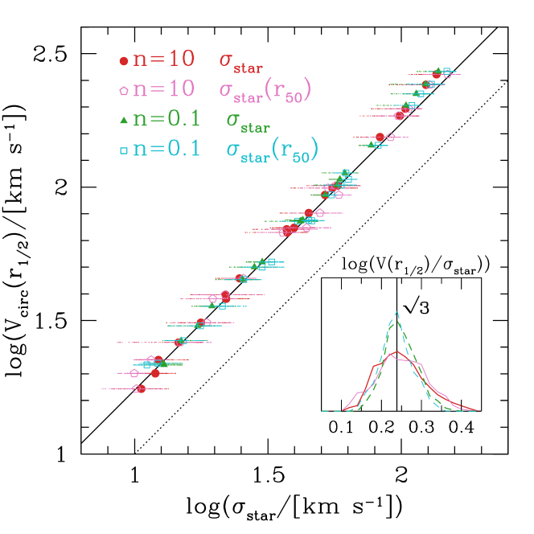
4 تقييد عتبة تكوين النجوم بالأرصاد
بعد أن أثبتنا كيف تعتمد بنية هالات المادة المظلمة بقوة على عتبة تكوين النجوم، ننتقل الآن إلى الأرصاد لمعايرة هذا الوسيط الحر. وبما أن هدفنا النهائي هو استخدام هذه المحاكيات المعايرة لاختبار نموذج CDM، فإننا نريد استخدام أرصاد لا ترتبط مباشرة ببنية هالات المادة المظلمة.
بيّن Buck et al. (2019b) أن تكتل النجوم الفتية في محاكيات NIHAO يعتمد بقوة على عتبة تكوين النجوم المعتمدة. ويمكن قياس التكتل كميا باستخدام إحصاء الارتباط النقطي الثنائي لجسيمات النجوم الفتية. وهنا نكرر تحليل Buck et al. (2019b) باستخدام قيم أكثر لعتبة تكوين النجوم (، ). ولمطابقة نطاق الكتلة النجمية للمجرات المرصودة في Grasha et al. (2017)، نأخذ محاكيات 8 ذات الكتل النجمية عند الانزياح الأحمر ، . ونستخدم 24 لقطة متساوية التباعد زمنيا من إلى . ولكل لقطة نحسب إحصاء الارتباط النقطي الثنائي مقابل الفصل، ونلائم البيانات بدالة (انظر Buck et al., 2019b, للتفاصيل). ومن الملاءمة نحسب سعة التكتل عند فصل مقداره 100 pc، ونصف القطر الذي تكون عنده سعة التكتل مساوية للواحد (أي مساوية لتوزيع عشوائي). ولكل مجموعة محاكيات ذات قيمة معينة من ، نجد وسيط المخرجات الـ وتشتتها.
يعرض الشكل 6 سعة التكتل عند 100 pc (يسارا) وطول الارتباط (يمينا) مقابل عتبة تكوين النجوم في المحاكاة. وتبين الأشرطة الرمادية منطقة 1 من الأرصاد باستخدام بيانات مسح LEGUS المعروضة في Grasha et al. (2017). لاحظ أننا في إجراء هذه المقارنة نفترض وجود تطابق بين تكتل عناقيد النجوم الفتية المرصودة وتكتل جسيمات النجوم الفتية المحاكاة. وبالنسبة إلى الأرصاد نستخدم نتائج الأعمار الأقل من 40 Myr وجميع الأصناف 1،2،3. أما في المحاكيات فلا نطبق إلا قطعا في العمر. وتملك جسيمات النجوم في محاكياتنا كتلا مشابهة لكتل العناقيد النجمية المرصودة ( إلى ). ولذلك، وكتقريب من الرتبة الأولى، يبدو افتراضنا أن جسيمات النجوم الفتية تتتبع العناقيد النجمية الفتية معقولا. ومع ذلك، فإن تحقيقا معمقا في التوافق بين تكتل جسيمات النجوم المحاكاة والعناقيد النجمية المرصودة، وفي طرق تقليل أي انحيازات، أمر جدير بالتأكيد.
يبين الرمز في كل محاكاة القيمة الوسيطة، بينما يبين شريط الخطأ الخطأ في الوسيط ( أضعاف الانحراف المعياري). وكما هو متوقع، يوجد اتجاه واضح نحو تكتل أقوى (سعة تكتل أعلى وطول ارتباط أصغر) مع عتبات أعلى لتكوين النجوم. وتتداخل المحاكيات ذات مع التكتل المرصود، في حين أن المحاكيات ذات و تبعد بأكثر من عن الأرصاد، مع تكتل أضعف من اللازم. وتبين النقاط المتعددة عند و أن قوة التكتل ليست حساسة لكفاءة التغذية الراجعة أو لكفاءة تكوين النجوم.
وباختصار، يوفر تكتل النجوم الفتية قيودا قوية على النموذج دون الشبكي لتكوين النجوم في محاكياتنا. وتُستبعد عتبات تكوين النجوم بقوة، بينما توفر توافقا جيدا مع التكتل المرصود. وعلى الرغم من أن التكتل لا يحدد قيمة بعينها لعتبة تكوين النجوم، فإنه يظل يقدم قيدا مفيدا جدا، لأن غالبية محاكيات تكوّن المجرات في الأدبيات تعتمد عتبة منخفضة لتكوين النجوم (). علاوة على ذلك، وكما هو مبين في Dutton et al. (2019c) وأدناه، تعتمد البنية الداخلية لهالة المادة المظلمة أيضا على عتبة تكوين النجوم.
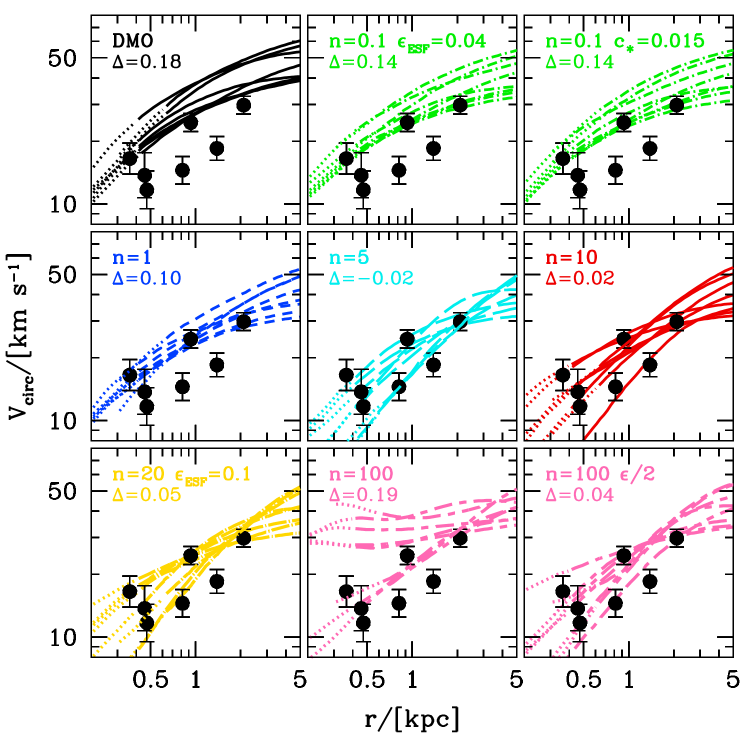
5 اختبار CDM بحركيات المجرات
بعد أن أثبتنا كيف تعتمد بنية هالات CDM على عتبة تكوين النجوم، وعايرنا هذا الوسيط الحر باستخدام تكتل النجوم الفتية، ننتقل الآن إلى أرصاد السرعات الدائرية للمجرات لاختبار التنبؤات الناتجة لـ CDM. واتباعا لتحليل Dutton et al. (2019c)، نقسم الاختبارات إلى نطاقي كتلة يقابلان المجرات القزمة () والمجرات متوسطة الكتلة (). ويستند هذا التقسيم إلى توافر المتتبعات الديناميكية. فبالنسبة إلى المجرات منخفضة الكتلة نستخدم تشتتات السرعات النجمية المتكاملة لتتبع السرعة الدائرية داخل نصف قطر نصف الضوء، بينما نستخدم منحنيات دوران محلولة للمجرات متوسطة الكتلة.
أولا، نبيّن أن تشتت السرعات النجمية المسقط، ، متتبع جيد للسرعة الدائرية عند نصف قطر نصف الكتلة النجمية ثلاثي الأبعاد 3D، . ويبين الشكل 7 العلاقة بين السرعة الدائرية وتشتت السرعات لجميع المجرات المحاكاة الـ 20 عند باستخدام 100 إسقاطا عشوائيا لكل مجرة. وتعرض الدوائر الحمراء والخماسيات الأرجوانية نتائج ، بينما تعرض المثلثات الخضراء والمربعات السماوية نتائج (ومعاد معايرتها مع ). وتبين النقاط الحمراء والخضراء تشتت السرعات النجمية المقاس داخل المجرة كلها (المعرفة بأنها 0.2 من أنصاف الأقطار الفيريالية، )، بينما تبين النقاط الأرجوانية والسماوية تشتت السرعات النجمية داخل نصف قطر نصف الكتلة النجمية المسقط. ويبين الشكل 7 أن النسبة بين السرعة الدائرية وتشتت السرعات النجمية غير حساسة في المتوسط لعتبة تكوين النجوم في المحاكاة، ولا للفتحة التي يقاس ضمنها تشتت السرعات.
في المتوسط نجد ، كما تتنبأ معادلات Jeans الكروية (Wolf et al., 2010). ويوجد تشتت غير مهمل قدره dex في هذه العلاقة. أما التباين من مجرة إلى أخرى فهو صغير نسبيا. ويأتي معظم التشتت من تغيرات ناتجة عن زوايا رؤية مختلفة. ومن ثم تلزم عينات من المجرات لتخفيض أخطاء المعاينة.
5.1 المجرات القزمة
بالنسبة إلى الهالات ذات الكتل الأدنى، وعددها 8 في عينتنا في الشكل 8، نقارن منحنيات السرعة الدائرية المحاكاة (خطوط) بالسرعة الدائرية عند نصف قطر نصف الضوء ثلاثي الأبعاد 3D للمجرات القزمة الحقلية المرصودة في المجموعة المحلية (نقاط ذات أشرطة خطأ) من Kirby et al. (2014). وتملك المجرات المحاكاة كتلا نجمية في النطاق ، بينما تملك المجرات القزمة المرصودة لمعانيات في النطاق V من إلى . إضافة إلى ذلك، استبعدنا من الأرصاد المجرات ذات المسافات الأقل من 500 kpc ( من أنصاف الأقطار الفيريالية) عن Milky Way لتقليل تلوث مجرات الارتداد الخلفي (Buck, et al., 2019a). لاحظ أن أربعة ألواح في الشكل 8 سبق نشرها في الشكل 4 من (Dutton et al., 2019c). والألواح المعاد عرضها هي: DMO (أعلى اليسار)، و (أعلى الوسط)، و (الوسط اليسار)، و (الوسط اليمين). وهنا نعيد عرض هذه النتائج ونضيف خمس مجموعات إضافية من المحاكيات: (أعلى اليمين)، و (الوسط)، و (أسفل اليسار)، و (أسفل الوسط)، و بنصف تليين القوة (أسفل اليمين).
كما في Dutton et al. (2019c)، نحسب الإزاحة المتوسطة بين الأرصاد () والمحاكيات (). ولكل نقطة بيانات مرصودة، ، تكون الإزاحة المتوسطة عند نصف القطر بالنسبة إلى المحاكيات الـ هي
| (3) |
ثم نأخذ متوسط على نقاط البيانات المرصودة الـ 7، ونرمز إليه بـ .
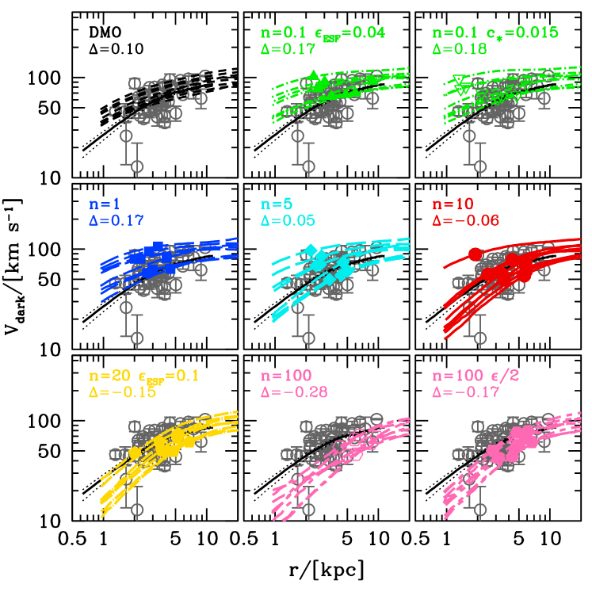
كما بُين سابقا في الشكل 4 من Dutton et al. (2019c)، نرى أن محاكيات DMO (اللوح العلوي الأيسر) أعلى بصورة منهجية من اللازم. فالإزاحة المتوسطة ، أي متوسط الإزاحة بين المحاكاة والرصد، تساوي معاملا قدره 1.5 في السرعة، ومعاملا قدره 2.3 في الكتلة المحصورة. وهذا يستعيد مشكلة أكبر من أن تفشل المعروفة في مجرات حقل المجموعة المحلية (Garrison-Kimmel et al., 2014).
تستطيع المحاكيات الهيدروديناميكية ذات العتبة الأدنى () و () أن تعيد إنتاج بعض نقاط البيانات المرصودة، لا كلها، وتتنبأ بسرعات دائرية أعلى من اللازم منهجيا. وبوجه خاص عند ، تبين مجموعتا المحاكيات أن منحنيات المادة المظلمة غير حساسة لكفاءتي التغذية الراجعة النجمية المبكرة وتكوين النجوم.
لقد بينّا سابقا في Dutton et al. (2016a, 2019c) أن محاكيات NIHAO تحل مشكلة أكبر من أن تفشل. فمحاكيات NIHAO المرجعية ذات تطابق الأرصاد جيدا مع (اللوح الأوسط الأيمن). كما تقدم المحاكيات الجديدة (، و المعاد معايرتها، و بنصف التليين) توافقا جيدا مع الأرصاد، وهو أمر مثير للاهتمام لأن هذه هي عتبات تكوين النجوم المتوافقة مع التكتل المرصود للنجوم الفتية المبين أعلاه في الشكل 6. لاحظ أن محاكيات ذات التليين القياسي تنتج قيمة عالية لـ . وينتج ذلك من تراكم الغاز في مراكز المجرات (لأن الغاز لا يستطيع بلوغ عتبة تكوين النجوم بسهولة)، لا من انكماش قوي لهالة المادة المظلمة ولا من مكون نجمي مهم. انظر اللوح العلوي الأيسر في الشكل 4 للاطلاع على مثال.
5.2 المجرات متوسطة الكتلة
ننظر الآن في المجرات المحاكاة ذات الكتل النجمية في النطاق . وكما في حالة المجرات القزمة، توجد 8 هالة في هذا النطاق الكتلي. وفي الشكل 9 نقارن منحنيات السرعة الدائرية المحاكاة (خطوط) بالسرعة الدائرية للمادة المظلمة عند نصف قطر نصف الضوء (دوائر رمادية ذات أشرطة خطأ) من مسح SPARC للمجرات القريبة المكونة للنجوم (Lelli et al., 2016). ويوسع هذا الشكل النتائج المعروضة سابقا في الشكل 5 من Dutton et al. (2019c). وعلى وجه التحديد، فإن الألواح الآتية معادة من Dutton et al. (2019c): DMO (أعلى اليسار)، و (أعلى الوسط)، و (الوسط اليسار)، و (الوسط اليمين).
بالنسبة إلى الأرصاد، تُحصل السرعة الدائرية للمادة المظلمة بطرح منحنيي السرعة الدائرية للنجوم والغاز من سرعة الدوران الكلية، مع افتراض نسبة كتلة نجمية إلى ضوء عند m مقدارها 0.5. ويبين الخط الأسود المتصل منحنى السرعة المتوسطة للأرصاد مرسوما بين أصغر وأكبر نقطة متوسطتين على منحنى الدوران. ولأن هذه المجرات تميل إلى أن تكون مهيمن عليها بالمادة المظلمة، لا يوجد إلا عدم يقين صغير في منحنى المادة المظلمة ناتج من عدم يقين قدره dex في نسبة الكتلة النجمية إلى الضوء (الخطوط المنقطة). أما مصادر عدم اليقين الأكبر فهي مدى دقة منحنى الدوران المصحح للميل في تتبع السرعة الدائرية، وآثار المعاينة لأن SPARC ليس مسحا محدود الحجم.
تبين الخطوط الملونة منحنيات السرعة الدائرية للمادة المظلمة المحاكاة المحسوبة في كرات: . وفي محاكيات DMO أُعيد قياس المنحنى الكلي بالكسر الباريوني الكوني (). أما في المحاكيات الهيدروديناميكية فتقع الرموز عند نصف قطر نصف الكتلة المسقط للنجوم. ويبين ذلك أن أحجام المجرات في هذه المحاكيات تتفق على نحو معقول مع الأرصاد، وأن اعتماد الأحجام على عتبة تكوين النجوم صغير فحسب.
يُحسب الوسيط (انظر المعادلة 3) عند نصف قطر مقداره 2 kpc. وقد اختير ذلك لأنه أصغر مقياس مكاني محلول على نحو موثوق في كل من المحاكيات والأرصاد لجميع المجرات. وكما في حالة المجرات القزمة في الشكل 8، نرى أن محاكيات DMO و و أعلى من اللازم منهجيا، ومع ازدياد تنخفض سرعات المادة المظلمة بصورة منهجية. كما تقدم المحاكيات التي تطابق على أفضل وجه التكتل المرصود للنجوم الفتية () أفضل توافق مع أرصاد السرعات الدائرية للمادة المظلمة. لاحظ أن النقص في التنبؤ بالأرصاد عند يرجع جزئيا على الأقل إلى أن هذه المحاكيات تنتج نجوما أقل من اللازم (انظر الشكل 1). وتطابق محاكيات الكتل النجمية للمجرات القزمة، وتطابق السرعات أيضا. لذلك ينبغي ألا يُعد الفشل الظاهري لمحاكيات في مطابقة السرعات في الشكل 9 فشلا قاتلا لمحاكيات . ومن ثم ستكون إعادة المعايرة مرغوبة قبل استخلاص استنتاجات أقوى بشأن .
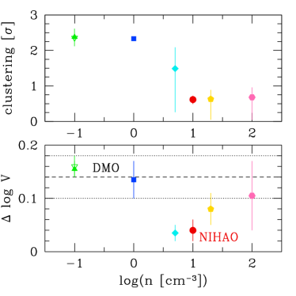
يعرض الشكل 10 ملخصا لنتائج التكتل والحركيات. وتطابق جميع المحاكيات المعروضة هنا (باستثناء عند الكتل المتوسطة) علاقة الكتلة النجمية مقابل كتلة الهالة (الشكل 1). وتستخدم قياسات التكتل لتقديم معايرة إضافية. ويبين اللوح العلوي الإزاحة المتوسطة بين التكتل المحاكى والمرصود (من الشكل 6) بوحدات عدم اليقين المرصود. ويربط شريط الخطأ بين قياسي التكتل: السعة عند 100pc وطول الارتباط. وباستثناء ، يعطي القياسان نتائج متشابهة جدا. ولا تعيد محاكيات و إنتاج التكتل المرصود للنجوم الفتية، ومن ثم لا ينبغي استخدامها لاختبار CDM. أما المحاكيات ذات إلى فتعيد إنتاج التكتل بدرجة جيدة على نحو متكافئ. وتكون متوافقة مع قياس واحد فقط للتكتل، مما يجعل هذه العتبة ناجحة بشكل حدي.
يبين اللوح السفلي الإزاحة المتوسطة في بين المحاكيات والأرصاد (وسيط من الشكلين 8 و 9). ويستخدم هذا لاختبار نموذج CDM. ومرة أخرى، تربط أشرطة الخطأ الرأسية بين القياسين للمجرات القزمة ومتوسطة الكتلة. وتبين الخطوط الأفقية إزاحات السرعة لمحاكيات DMO، وهي قريبة جدا من قيم المحاكيات الهيدروديناميكية ذات و. ومن ثم تفشل محاكيات DMO والمحاكيات الهيدروديناميكية ذات و في مطابقة الأرصاد. ولا يمثل ذلك مشكلة لنموذج CDM، لأن هذه المحاكيات قد استُبعدت أصلا بقياسات التكتل.
تبين الدائرة الحمراء قيمة NIHAO المرجعية ، التي تقدم أفضل توافق مع تكتل النجوم الفتية والسرعات الدائرية للمجرات القريبة. وبذلك نكون قد بينا أن المحاكيات المعايرة لإعادة إنتاج علاقة الكتلة النجمية مقابل كتلة الهالة، وتكتل النجوم الفتية، تمتلك مادة مظلمة على المقاييس الصغيرة متوافقة مع CDM.
6 ملخص
في هذه الورقة درسنا أثر عتبة تكوين النجوم، ، في استجابة هالة المادة المظلمة لتكوّن المجرات. وبتوسيع دراسة Dutton et al. (2019c) التي نظرت في ، نأخذ هنا في الاعتبار عتبات تصل إلى . وكما في Dutton et al. (2019c)، نستخدم 20 مجموعات من المحاكيات الهيدروديناميكية الكونية من مشروع NIHAO (Wang et al., 2015)، التي تحاكي هالات مادة مظلمة في النطاق عند الانزياح الأحمر . ونلخص نتائجنا على النحو الآتي:
-
•
نؤكد نتائج الدراسات السابقة التي تفيد بأن استجابة هالة المادة المظلمة لتكوّن المجرات هي أساسا دالة في وسيطين: 1) النسبة بين الكتلة النجمية وكتلة الهالة (Di Cintio et al., 2014a; Chan et al., 2015; Tollet et al., 2016)، و2) عتبة تكوين النجوم المعتمدة، ، في المحاكاة (Dutton et al., 2019c; Benítez-Llambay et al., 2019).
-
•
بالنسبة إلى عتبات تكوين النجوم العالية ( إلى )، تكون استجابة الهالة قد تقاربت (الشكل 2)، شريطة أن تمتلك المحاكاة استبانة مكانية كافية لحل تجزؤ الغاز إلى كثافات أعلى من عتبة كثافة الغاز المعنية.
-
•
نرد الادعاءات السابقة التي قدمها Benítez-Llambay et al. (2019) بحدوث انكماش للهالة عند إلى عدم كفاية الاستبانة المكانية. فمع تليين القوة الافتراضي لدينا تكون كثافة الغاز القصوى التي يمكننا حلها هي . ويؤدي تطبيق صيغتنا على محاكيات Benítez-Llambay et al. (2019) أيضا إلى . وبالنسبة إلى محاكياتنا ذات و لا يستطيع الغاز أن يتجزأ محليا؛ بل يفقد بدلا من ذلك عزمه الزاوي وينهار إلى مركز المجرة. ويسيطر الغاز على الجهد المركزي مسببا انكماش هالة المادة المظلمة (الشكل5). غير أننا إذا خفضنا تليين قوة الغاز بمعامل 2 إلى 4، فإننا نستعيد تمدد الهالة المتحقق في محاكياتنا المرجعية ذات باستخدام (الشكل 4).
- •
- •
-
•
وباستقصاء الآثار المنهجية في هذا الاختبار (للمجرات منخفضة الكتلة)، نبيّن أن تشتتات السرعات النجمية متتبع غير منحاز للسرعة الدائرية عند نصف قطر نصف الكتلة النجمية ثلاثي الأبعاد 3D (الشكل7).
ومن ثم نستنتج أن نموذج CDM يقدم وصفا جيدا لبنية المجرات على مقاييس kpc (عندما تؤخذ تأثيرات الباريونات في الحسبان على نحو صحيح).
ومع اختيارنا للنماذج دون الشبكية، لا تستطيع إلا المحاكيات ذات عتبة تكوين نجوم عالية أن تقدم تنبؤات دقيقة لبنية هالات CDM. وإلى جانب محاكيات NIHAO المرجعية لدى Wang et al. (2015)، تعتمد عدة مجموعات أخرى أيضا عتبة عالية لتكوين النجوم: مثل Governato et al. (2010, 2012)، وFIRE Hopkins et al. (2014, 2018)، وRead et al. (2016). وإذا امتدت هذه النتيجة إلى اختيارات أخرى للنماذج دون الشبكية، فهذا يعني أن جزءا كبيرا من محاكيات التكبير في الأدبيات، مثل APOSTLE (Sawala et al., 2016) وAURIGA (Grand et al., 2017)؛ وجميع المحاكيات كبيرة الحجم، مثل EAGLE (Schaye et al., 2015) وILLUSTRIS (Vogelsberger, et al., 2014; Pillepich, et al., 2019) و ROMULUS (Tremmel, et al., 2017)، تحتاج إلى مراجعة نماذجها لتكوين النجوم والتغذية الراجعة وإعادة معايرتها إذا أُريد لها تقديم تنبؤات دقيقة لبنية هالات المادة المظلمة الباردة على مقاييس kpc. وثمة اعتبار إضافي هو أن المحاكيات ذات عتبات تكوين النجوم الأعلى تستغرق وقتا أطول بكثير في التشغيل (بسبب الكثافات الغازية الأعلى وما يستتبعها من خطوات زمنية أصغر مطلوبة). وكثير من المحاكيات كبيرة الحجم لن يكون ممكنا حسابيا في الوقت الحاضر إذا شُغلت بنموذج ذي عتبة عالية لتكوين النجوم. ولذلك توجد مفاضلة بين دقة المحاكاة وعدد الهالات التي يمكن محاكاتها.
وبالنظر إلى المستقبل، فإن كلا من معايرة عتبة تكوين النجوم واختبار CDM اللذين نقدمهما يستندان إلى عينات صغيرة من المجرات المحاكاة والمرصودة. ومن ثم يمكن تحقيق تحسينات كبيرة في الدقة باستخدام عينات أكبر. وستتيح الدقة المحسنة تطبيق الإطار الذي قدمناه على نماذج أخرى للمادة المظلمة، مثل المادة المظلمة الدافئة والمادة المظلمة ذاتية التفاعل.
شكر وتقدير
نشكر المحكم المجهول على تقديم تقرير بنّاء حسّن وضوح الورقة. أُجري هذا البحث على موارد High Performance Computing في New York University Abu Dhabi؛ وعلى عنقود theo في Max-Planck-Institut für Astronomie، وعلى عناقيد hydra في Rechenzentrum في Garching. يعرب المؤلفون عن امتنانهم لـ Gauss Centre for Supercomputing e.V. (www.gauss-centre.eu) على تمويل هذا المشروع من خلال توفير زمن حوسبة على الحاسوب الفائق GCS Supercomputer SuperMUC في Leibniz Supercomputing Centre (www.lrz.de). ويقر TB بالدعم المقدم من European Research Council بموجب منحة ERC-CoG رقم CRAGSMAN-646955. ويمول AO من Deutsche Forschungsgemeinschaft (DFG, German Research Foundation) – MO 2979/1-1.
بيان توافر البيانات
ستُتاح البيانات التي تستند إليها هذه المقالة عند تقديم طلب معقول إلى المؤلف المراسل.
References
- Behroozi et al. (2013) Behroozi, P. S., Wechsler, R. H., & Conroy, C. 2013, ApJ, 770, 57
- Benítez-Llambay et al. (2019) Benítez-Llambay, A., Frenk, C. S., Ludlow, A. D., et al. 2019, MNRAS, 488, 2387
- Blumenthal et al. (1986) Blumenthal, G. R., Faber, S. M., Flores, R., & Primack, J. R., 1986, ApJ, 301, 27
- Bose et al. (2019) Bose, S., Frenk, C. S., Jenkins, A., et al. 2019, MNRAS, 486, 4790
- Buck et al. (2017) Buck, T., Macciò, A. V., Obreja, A., et al. 2017, MNRAS, 468, 3628
- Buck, et al. (2018) Buck T., Ness M. K., Macciò A. V., Obreja A., Dutton A. A., 2018, ApJ, 861, 88
- Buck, et al. (2019a) Buck T., Macciò A. V., Dutton A. A., Obreja A., Frings J., 2019a, MNRAS, 483, 1314
- Buck et al. (2019b) Buck, T., Dutton, A. A., & Macciò, A. V. 2019b, MNRAS, 486, 1481
- Buck, et al. (2019c) Buck T., Ness M., Obreja A., Macciò A. V., Dutton A. A., 2019c, ApJ, 874, 67
- Bullock & Boylan-Kolchin (2017) Bullock, J. S., & Boylan-Kolchin, M. 2017, ARA&A, 55, 343
- Chan et al. (2015) Chan, T. K., Kereš, D., Oñorbe, J., et al. 2015, MNRAS, 454, 2981
- Crain et al. (2015) Crain, R. A., Schaye, J., Bower, R. G., et al. 2015, MNRAS, 450, 1937
- Di Cintio et al. (2014a) Di Cintio, A., Brook, C. B., Macciò, A. V., et al. 2014, MNRAS, 437, 415
- Dutton & Macciò (2014) Dutton, A. A., & Macciò, A. V. 2014, MNRAS, 441, 3359
- Dutton et al. (2016a) Dutton, A. A., Macciò, A. V., Frings, J., et al. 2016a, MNRAS, 457, L74
- Dutton et al. (2016b) Dutton, A. A., Macciò, A. V., Dekel, A., et al. 2016b, MNRAS, 461, 2658
- Dutton et al. (2017) Dutton, A. A., Obreja, A., Wang, L., et al. 2017, MNRAS, 467, 4937
- Dutton et al. (2019a) Dutton, A. A., Obreja, A., & Macciò, A. V. 2019a, MNRAS, 482, 5606
- Dutton et al. (2019b) Dutton, A. A., Macciò, A. V., Obreja, A., et al. 2019b, MNRAS, 485, 1886
- Dutton et al. (2019c) Dutton, A. A., Macciò, A. V., Buck, T., et al. 2019c, MNRAS, 486, 655
- El-Zant et al. (2001) El-Zant, A., Shlosman, I., & Hoffman, Y. 2001, ApJ, 560, 636
- Fitts, et al. (2017) Fitts A., et al., 2017, MNRAS, 471, 3547
- Garrison-Kimmel et al. (2014) Garrison-Kimmel, S., Boylan-Kolchin, M., Bullock, J. S., & Kirby, E. N. 2014, MNRAS, 444, 222
- Gill et al. (2004) Gill, S. P. D., Knebe, A., & Gibson, B. K. 2004, MNRAS, 351, 399
- Gnedin et al. (2004) Gnedin, O. Y., Kravtsov, A. V., Klypin, A. A., & Nagai, D. 2004, ApJ, 616, 16
- Governato et al. (2010) Governato, F., Brook, C., Mayer, L., et al. 2010, Nature, 463, 203
- Governato et al. (2012) Governato, F., Zolotov, A., Pontzen, A., et al. 2012, MNRAS, 422, 1231
- Grand et al. (2017) Grand, R. J. J., Gómez, F. A., Marinacci, F., et al. 2017, MNRAS, 467, 179
- Grasha et al. (2017) Grasha, K., Calzetti, D., Adamo, A., et al. 2017, ApJ, 840, 113
- Hopkins et al. (2014) Hopkins, P. F., Kereš, D., Oñorbe, J., et al. 2014, MNRAS, 445, 581
- Hopkins et al. (2018) Hopkins, P. F., Wetzel, A., Kereš, D., et al. 2018, MNRAS, 480, 800
- Kirby et al. (2014) Kirby, E. N., Bullock, J. S., Boylan-Kolchin, M., Kaplinghat, M., & Cohen, J. G. 2014, MNRAS, 439, 1015
- Knollmann & Knebe (2009) Knollmann, S. R., & Knebe, A. 2009, ApJS, 182, 608
- Lazar, et al. (2020) Lazar A., Bullock J. S., Boylan-Kolchin M., Chan T. K., Hopkins P. F., Graus A. S., Wetzel A., et al., 2020, MNRAS, 497, 2393
- Lelli et al. (2016) Lelli, F., McGaugh, S. S., & Schombert, J. M. 2016, AJ, 152, 157
- Ludlow, Schaye & Bower (2019) Ludlow A. D., Schaye J., Bower R., 2019, MNRAS, 488, 3663
- Macciò et al. (2016) Macciò, A. V., Udrescu, S. M., Dutton, A. A., et al. 2016, MNRAS, 463, L69
- Macciò, et al. (2020) Macciò A. V., Crespi S., Blank M., Kang X., 2020, MNRAS, 495, L46
- Moster et al. (2013) Moster, B. P., Naab, T., & White, S. D. M. 2013, MNRAS, 428, 3121
- Moster et al. (2018) Moster, B. P., Naab, T., & White, S. D. M. 2018, MNRAS, 477, 1822
- Pillepich, et al. (2019) Pillepich A., et al., 2019, MNRAS, 490, 3196
- Pontzen & Governato (2012) Pontzen, A., & Governato, F. 2012, MNRAS, 421, 3464
- Read & Gilmore (2005) Read, J. I., & Gilmore, G. 2005, MNRAS, 356, 107
- Read et al. (2016) Read, J. I., Agertz, O., & Collins, M. L. M. 2016, MNRAS, 459, 2573
- Sawala et al. (2016) Sawala, T., Frenk, C. S., Fattahi, A., et al. 2016, MNRAS, 457, 1931
- Schaye et al. (2015) Schaye, J., Crain, R. A., Bower, R. G., et al. 2015, MNRAS, 446, 521
- Stadel et al. (2009) Stadel, J., Potter, D., Moore, B., et al. 2009, MNRAS, 398, L21
- Stinson et al. (2006) Stinson, G., Seth, A., Katz, N., et al. 2006, MNRAS, 373, 1074
- Stinson et al. (2013) Stinson, G. S., Brook, C., Macciò, A. V., et al. 2013, MNRAS, 428, 129
- Stinson et al. (2015) Stinson, G. S., Dutton, A. A., Wang, L., et al. 2015, MNRAS, 454, 1105
- Tollet et al. (2016) Tollet, E., Macciò, A. V., Dutton, A. A., et al. 2016, MNRAS, 456, 3542
- Tremmel, et al. (2017) Tremmel M., et al., 2017, MNRAS, 470, 1121
- Vogelsberger, et al. (2014) Vogelsberger M., et al., 2014, MNRAS, 444, 1518
- Wang et al. (2015) Wang, L., Dutton, A. A., Stinson, G. S., et al. 2015, MNRAS, 454, 83
- Wadsley et al. (2017) Wadsley, J. W., Keller, B. W., & Quinn, T. R. 2017, MNRAS, 471, 2357
- Weinberg & Katz (2002) Weinberg, M. D., & Katz, N. 2002, ApJ, 580, 627
- Wolf et al. (2010) Wolf J., et al., 2010, MNRAS, 406, 1220